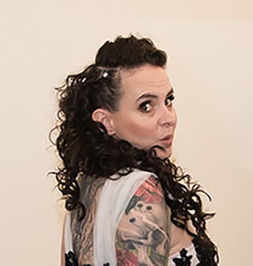

<div class="uk-container uk-container-large uk-padding-small uk-margin-large-top">

    <div class="uk-grid-small" uk-grid>

        <div class="uk-width-1-1">
            <h2 class="uk-margin-remove-bottom">About Us</h2>

            <p>Three Fates Digital comprises a team of innovative experts committed to crafting compelling websites, brands, 
            and applications that evolve with your business. Established in 2023, our agency traces its origins to 2007. 
            It all began when our founder first collaborated with clients in need of web design and digital marketing solutions. 
            Since those early days, our company has experienced consistent growth, catering to a diverse clientele that ranges 
            from dynamic startups to major public corporations, both locally and internationally.</p>

            <p>At the core of our philosophy is the belief that our clients need more than just a website; they need a robust 
            online presence. This philosophy has given rise to a distinctive fusion of creative flair and systematic 
            service, ensuring the delivery of high-quality projects both on time and within budget. Our team, comprised of skilled 
            designers, developers, and managers, is committed to more than just delivering satisfactory results. We aim for 
            excellence in all our endeavors, striving to set new standards of quality in every website and application we develop.</p>
            </div>

            <div class="uk-width-1-1">
                <h3 class="uk-margin-remove-bottom uk-margin-top">About Our Founder</h3>
            </div>

            <div class="uk-width-1-4@l">
                
            </div>

            <div class="uk-width-3-4@l">
                <h3 class="uk-margin-remove-vertical">Amber Lincoln, <span id="company-title">Founder & CEO</span></h3>
                <h4 class="uk-margin-remove-top">Seasoned Professional | Transforming Visions into Reality</h4>

                <p>Over the past 16 years, she has embarked on an extraordinary journey, leading vibrant teams across various sectors 
                such as entertainment, telehealth, mining, software, gaming, and web development. Her true calling lies in transforming 
                groundbreaking ideas into real-world achievements.</p>

                <p>She sees challenges as avenues for growth. With an innate ability to solve problems, she excels in identifying and 
                addressing risks. Her leadership spans the entire project lifecycle, from initiation to completion, showcasing extensive 
                expertise in Research and Development (R&D), initiating new projects, managing live productions, planning releases, and 
                handling DevOps.</p>
                <!--
                <p>Her skill in navigating different environments is a key aspect of her professional approach, enabling effective 
                collaboration with clients, stakeholders, and team members at all organizational levels. This flexibility has been 
                a cornerstone of her continuous success.</p>
                -->
            </div>
        </div>
    </div>
</div>